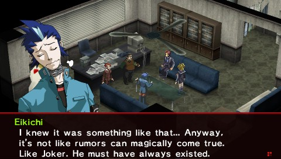
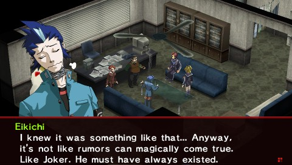

Atlus
Contacto

Persona 2 Innocent Sin es el segundo juego principal de la saga. El juego se lanzo originalmente en la PlayStation original, pero no salio a occidente y se quedo exclusivamente en Japon. Pero años mas tarde recivbio un remake para la PSP, el cual si llego en Ingles a occidente.
Innocent Sin trata sobre Tatsuya Suou, el protagonista, encangardonse sobre rumores en su ciudad haciendose realidad, debido al Joker. Por el camino, Tatsuya y sus amigos tiene que luchar contra Joker y avergiuar quien es la verdadera identidad detras de Joker, y tambien tiene que protejer su ciudad de la segunda aparicion de HItler, y su ejercito de robots Nazis conocidos como el "Ultimo Batallon".
Arcana: Sun
Arcanas secundarias: Hanged Man, World, Suit of Cups, Suit
of Swords
Persona(s): Vulcanus, Vulcanus Prime, Apollo
El protagonista del juego. Tiene una actitud madura y fria que le
hace popular tanto fuera como dentro de su escuela. Irnonicamente,
es una persona solitaria que hace lo que puede en orden de no
estar cerca de nadie.

Arcana: Moon
Arcanas secundarias: Magician, Hermit, Temperance, Suit of
Rods, Suit of Coins
Persona(s): Maia, Maia Prime, Maia Custom, Artemis
Una mujer alegre y brillante que naturalmente atrae a los demás
hacia ella con su consideración y naturaleza afable. Trabaja como
periodistapara una revista popular llamada "Coolest".

Arcana: Death
Arcanas secundarias: Strength, Hanged Man, World, Suit of
Cups, Suit of Swords
Persona(s): Rhadamanthus,Rhadamanthus Prime, Hades
Es el jefe de una panda de delincuentes en su escuela. Hace que
sus subditos le llamen "Michel" en vez de su nombre real. Suele
tomarse lo que la gente le dice de manera muy personal.

Arcana: Lovers
Arcanas secundarias: Hermit, Temperance, Star, Suit of
Rods, Suit of Coins
Persona(s): Eros, Eros Prime, Venus
Una estudiante de segundo año en la misma escuela de Tatsuya. Le
llaman "Ginko", tiene el aspecto de una persona Caucásica, pero
habla japones de manera fluida. Esta enamorada de Tatsuya y le
sigue por donde va sin importarle mucho lo que el piense sobre
ello.
Arcana: Empress
Arcanas secundarias: Strength, Hermit, Fortune,
Temperance, Star, Suit of Swords, Suit of Wands
Persona(s): Vesta, Durga
Una estudiante de una escuela vocacional de fotografia. Esta
pagando sus estudios trabajando como aprendiz de un fotoperiodista
freelance, y espera algun dia convertirse en una fotografa
profesional.

Arcana: Fortune
Arcanas secundarias: Magician, Hanged Man, World, Suit of
Rods, Suit of Cups
Persona(s): Hermes, Chronos
Un estudiante del mismo instiuto que Eikichi, que lleva sin
atender ninguna clase mucho tiempo. Tiene muchos conocimientos
soble flores y sus significados, y muchas veces lleva flores en la
chaqueta de su uniforme. Es un amigo muy cercano de Tatsuya desde
que eran niños.

Version original y el segundo juego de la saga.
Version re-hecha y mejorada del juego. Es muy fiel a la version original pero con cambios menores que mejoran la experiencia del jugador.

 
